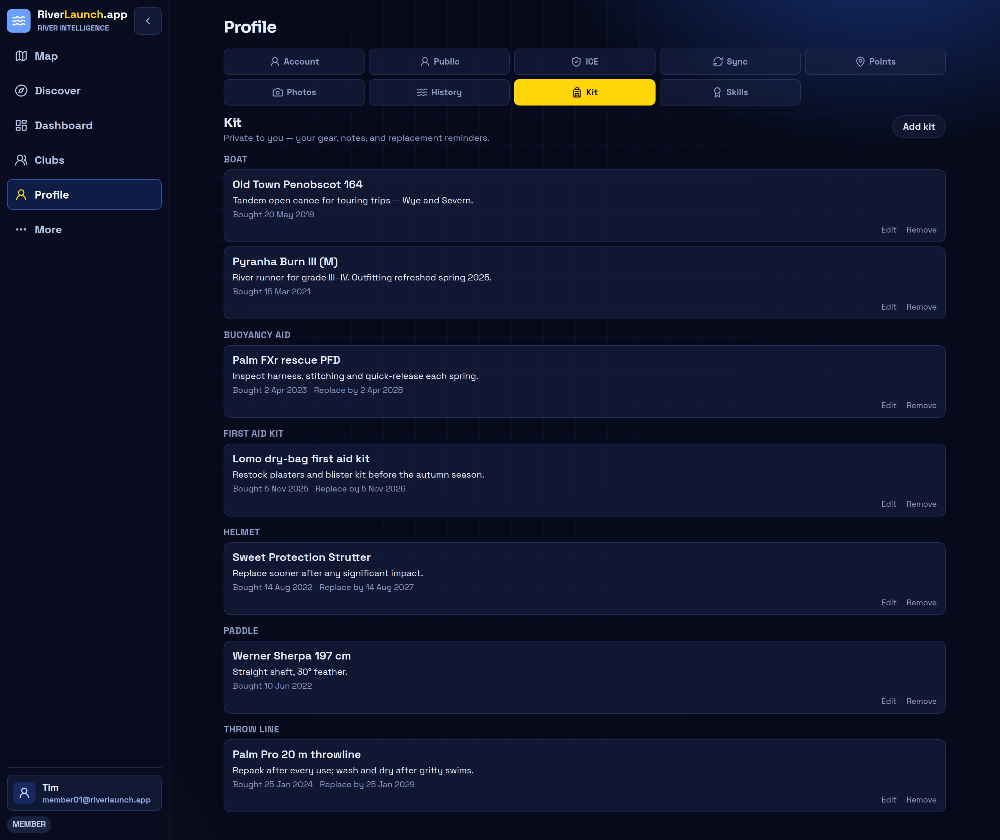
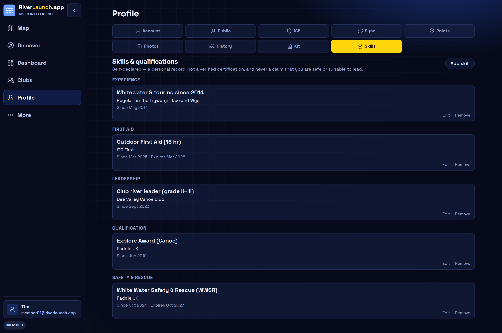

Emergency contact, kept private
Store an ICE contact against your profile. It's never public — you choose to share it with a session leader, for that session only.
Your profile
Beyond the map, RiverLaunch keeps the personal records that make planning easier — your gear, your training, and an emergency contact — private to you unless you choose to share.
Kit
A private inventory of your boats, paddles and safety kit — bought dates, replace-by reminders, and the maintenance notes you'd otherwise lose. Nothing important ages out unnoticed.

Skills
Keep your qualifications, rescue training and experience together, with attained and expiry dates so a refresher never sneaks up on you. Self-declared — a personal record, not a verified certification.

Store an ICE contact against your profile. It's never public — you choose to share it with a session leader, for that session only.
The points, photos and access notes you've added to the map, collected in one place with their review status.
Anything you add on the bank with no reception sits in your sync outbox and uploads itself when you're back in coverage.
Private by default
Kit, skills and ICE details are private to your account. A public profile is opt-in, and you decide what it shows.